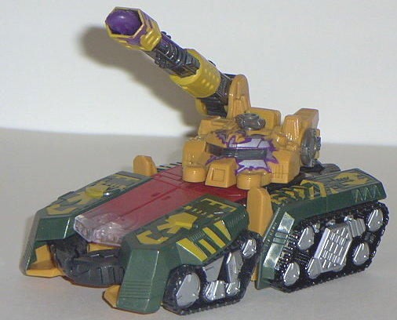
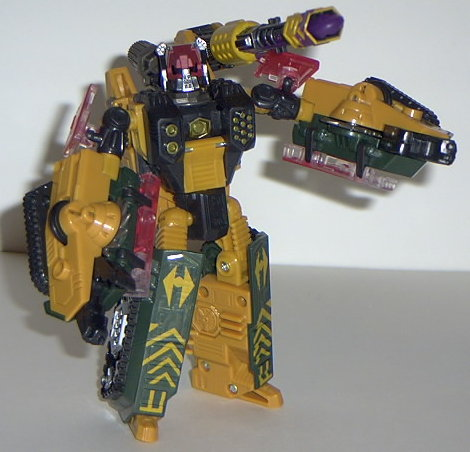
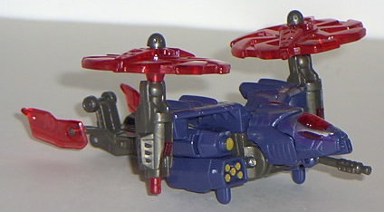
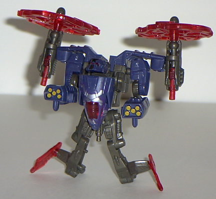

Tankor
& Obsidian (Universe)
Tankor
& Obsidian (Universe)
Price
: $20 (U.S.)
Tankor


Allegiance
: Decepticon
Size
: Mega
Difficulty of Transformation
: Medium
Color Scheme
: Mustard yellow, dark
jungle green, black, and some brownish dark gray, silver, dark purple,
dull gold, transparent red, clear plastic, and dull red
Rating
: 7.2
(NOTE: Because this is a repaint, this is
not a full-blown review. This mainly covers any changes made to the mold
and the color scheme, and merely compares it to Beast Machines Tankorr.
For a review on the mold itself, read the review of the Beast Machines
Tankorr
here
.)
This time around, Tankor
has a color scheme that's less fitting of a tank; yellow and green. Granted,
the green itself is a pretty nice tank color, but that mustard yellow just
doesn't fit Tankor- or any non-desert camo tank. It just looks tacky, in
my opinion. If you take out that color (which is hard to do, considering
that it's his primary color), the rest of the scheme is pretty nice, though.
The silver, black, and green go together surprisingly well spaced as they
are, and Tankor certainly has plenty of paint detailing. His energon radiation
pattern is especially neat- there's a long purple-and-silver streak coming
down from the mouth of the cannon, and it almost makes it look like it's
dripping plasma. On top of that, there's also a radiation pattern over
part of his eye visor in tank mode, giving him a "Terminator-esque" look.
Very nice. I wish they'd have made the clear plastic and red paint used
over it a different color, though, since it's the same color that it was
on the original Tankor...
No mold changes have
been made to Universe Tankor, although the joints on mine seem to be of
a more acceptable tightness than they are on my Beast Machines Tankorr.
I haven't talked to too many other people about this, but it seems to be
the same on theirs as well.
Tankor Bio
:
FUNCTION: Enforcer
MOTTO: "Tankor smash! Smash good!"
A veritable powerhouse, Tankor is one
of the strongest of Unicron's evil generals. Unfortunately, he is also
the dumbest. Has a unique partnership with his fellow Decepticon, Obsidian.
Serves as the muscle in this deadly duo and will instantly flatten any
enemy who choose to ignorantly cross his path. His sole purpose is to demolish
everything and anything that stand's in his master's way. Served the Predacon
leader-turned Cybertron despot, Megatron, before overthrowing him at the
bidding of his partner, Obsidian. After being transported away to the farthest
reaches of the universe to do Unicron's bidding, he was easily convinced
to serve his new, more powerful master, Tankor utilizes all of his awesome
weaponry to keep dissidents in line. He wields a flamethrower in tank mode,
while head mounted energy lasers top off an assortment of heavy weaponry
in robot mode. He heavily relies upon his partner for guidance and instruction.
Separating him from Obsidian, who serves as the brain to his brawn, is
the most effective way of taking advantage of his low intelligence and
thus besting this formidable opponent.
Strength: 10.0
Intelligence: 1.0
Speed: 6.0
Endurance: 8.0
Rank: 9.0
Courage: 9.0
Fireblast: 10.0
Skill: 7.0
Obsidian


Allegiance
: Decepticon
Size
: Basic
Difficulty of Transformation
:
Very Easy
Color Scheme
: Dark gray, transparent
cherry red, dull navy blue, and some silver, dull gold-yellow, and dark
purple
Rating
: 8.6
(NOTE: Because this is a repaint, this is
not a full-blown review. This mainly covers any changes made to the mold
and the color scheme, and merely compares it to Beast Machines Obsidian.
For a review on the mold itself, read the review of Beast Machines Obsidian
here
.)
One thing came to mind
when I first saw Universe Obsidian; it's about freakin' time. On its third
try of the Obsidian mold, Hasbro finally did it right. Now Obsidian actually
has a DARK color scheme, and one that isn't too far from the Beast Machines
show version, in fact- if you just make the dark navy blue a bit more grayish
and remove the energon radiation, he'd be pretty darned close. Speaking
of the Energon radiation pattern, it's not a very inventive pattern, but
it still looks pretty cool- there's some "worn" silver-and-purple streak
patterns on the front of the cockpit and the wings. The rest of the color
scheme is practically perfect, too; the gray, blue, red, and bits of yellow
go together VERY nicely. I wouldn't change a thing, except maybe add a
bit more paint detailing on the legs. (His Vehicon spark crystal now has
a Decepticon symbol painted over it, by the way.)
No mold changes have
been made to Universe Obsidian.
Obsidian Bio
:
FUNCTION: Aerial Combat
MOTTO: "Control the air and you control
the battle. Control the mind, you control the war."
An Autobot general from the Great War,
Obsidian was known for his battlefield strategies. Leading many successful
campaigns against Decepticon incursions on Cybertron, he was decorated
with the highest military honors. When the Predacon leader, Megatron, decimated
the populace by forcibly removing their Sparks, including Obsidian's, it
was only a matter of time before Obsidian could gain a measure of revenge.
Reoutfitted in a sleek helicopter form, Obsidian feigned loyalty to Megatron,
while plotting the Predacon leader's downfall. Recognizing his own frailties,
Obsidian paired up with the strongest of Megatron's generals, Tankor. After
months of careful planning, these dangerous partners succeeded where many
others had failed-Megatron was terminated and Obsidian usurped power for
himself. Using Tankor as his enforcer, the former Autobot quelled uprisings
with lethal force and held his home planet in an iron grip of fear and
tyranny. The dark god, Unicron, saw a benefit to such single-mindedness
and plucked Tankor and Obsidian to serve him at the far reaches of the
universe. In copter mode, several heat-seeking missiles, capable of penetrating
800 meters underground, are Obsidian's primary weapon. Although an expert
in low-flying aerial combat, Obsidian would rather use his wits and intellect
to defeat his opponents.
Strength: 5.0
Intelligence: 8.5
Speed: 8.1
Endurance: 5.1
Rank: 9.0
Courage: 8.1
Fireblast: 6.3
Skill: 9.5
Universe Tankor is a
step down from his previous version, mainly because of that darned mustard
yellow. His energon radiation pattern is really, really cool, though, and
the rest of his colors mesh nicely. Obsidian, on the other hand, is a pretty
neat small toy, and definitely the only version of him that has a good
color scheme. As a set, it's recommended if you don't have any of the previous
versions.
Reviews by Beastbot
Back to Transformers:
Universe Index